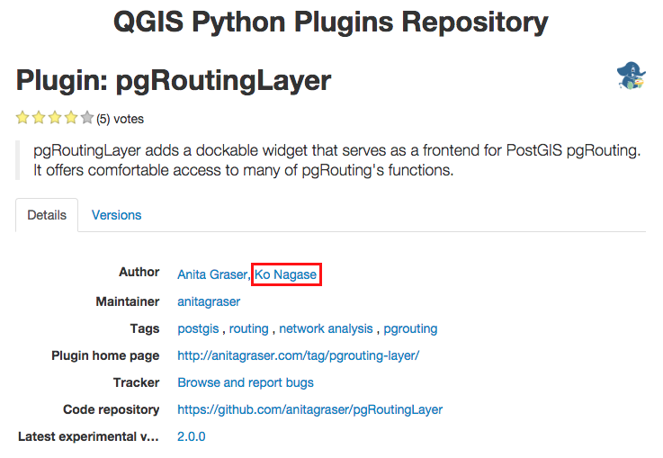

Research client side draggable route selection with pgRouting
Created by Ko Nagase, Georepublic Japan
Agenda
- Self-introduction
- Background
- Draggable routing frameworks
- Leaflet Routing Machine (LRM) pgRouting plugin
- Summary and future plans
Ko Nagase (sanak)
- Developer, Georepublic Japan
- pgRouting contributor
- QGIS pgRoutingLayer plugin contributor
pgRouting initial Windows binary (MinGW) creator
 http://pgrouting.org/download.html
http://pgrouting.org/download.html
Fixed/Improved pgRouting Alpha Shape function
 https://github.com/pgRouting/pgrouting/pull/236
https://github.com/pgRouting/pgrouting/pull/237
https://github.com/pgRouting/pgrouting/pull/236
https://github.com/pgRouting/pgrouting/pull/237
pgRouting multi OS (Mac/Win/Linux) build tester
- Micrsoft Windows 7 SP1 x64 (Desktop)
- Microsoft Visual Studio 2008/2010/2013 (pgrouting4w/master-msvc)
- MinGW GCC4.9 (Regina's build box)
- Mac OSX Yosemite (Laptop)
- Xcode 6.4 - Clang
- Ubuntu >= 12.04 (VirtualBox)
- GCC 4.x
QGIS pgRoutingLayer plugin contributor
 https://plugins.qgis.org/plugins/pgRoutingLayer/ https://github.com/anitagraser/pgRoutingLayerpgRoutingLayer plugin demo
Background
- Specific pgRouting use case
- All possible routes
- Round trip case
- Parallel edges case
- K shortest path (KSP) limitations
- Necessity of draggable routing
All possible routes

- Known as "Self-avoiding walk"
https://en.wikipedia.org/wiki/Self-avoiding_walk - Combinatorial explosion
https://www.youtube.com/watch?v=Q4gTV4r0zRs
Round trip case

- The combinatorial explosion become more worse...
Same source/target parallel edges case

K shortest path (KSP) limitations

- KSP returns 1st, 2nd, ..., Kth "alternative" routes
- pgr_ksp - K-Shortest Path http://docs.pgrouting.org/2.1/src/ksp/doc/ksp_v3.html
- KSP is not for "all possible" routes...
- KSP doesn't support "round trip" case
- To support parallel edges case, post processing becomes necessary
http://docs.pgrouting.org/2.1/doc/src/recipes/parallel_handling.html
Necessity of draggable routing

- After selecting "start"/"end" points, then drag a point on intermediate edges to on another edge
- Just do S=>1, 1=>2, 2=>E routing
- Supporting "round trip" case is possible
- To support parallel edges case, edge based routing is necessary, and "pgr_trsp" supports it
Draggable routing frameworks
- Google Maps Directions API
- Open Source Routing Machine (OSRM)
- Leaflet Routing Machine (LRM)
Google Maps Directions API
- Link: https://maps.google.com/
- Documentation:
https://developers.google.com/maps/documentation/directions/intro - Example:
Muko-city, Kyoto-prefecture, Japan (135.703151640629,34.9447239682395) - pros:
- Most well known framework
- cons:
- Closed source
- Need to paid money for commercial use
Open Source Routing Machine (OSRM)
- Link: http://map.project-osrm.org/
- Source code/Documentation:
https://github.com/Project-OSRM/osrm-backend https://github.com/Project-OSRM/osrm-frontend - Example:
Muko-city, Kyoto-prefecture, Japan (135.703151640629,34.9447239682395) - pros:
- Well known framework
- Open source
- cons:
- License is strict (AGPL)
Leaflet Routing Machine (LRM)
- Project: http://www.liedman.net/leaflet-routing-machine/
- Source code: https://github.com/perliedman/leaflet-routing-machine
- pros:
- Open source
- License is not strict (ICS)
- Several routing engines support: OSRM (builtin default), GraphHopper, MapBox Directions API, Mapzen Valhalla, ...
- cons:
- pgRouting with own network data is not supported
Leaflet Routing Machine (LRM) pgRouting plugin
- Quick grance at LRM plugin interface
- Server side design
- Client side processing
- Demo
Fragments
Hit the next arrow...
... to step through ...
... a fragmented slide.
Fragment Styles
There's different types of fragments, like:
grow
shrink
fade-out
current-visible
highlight-red
highlight-blue
Transition Styles
You can select from different transitions, like:
None -
Fade -
Slide -
Convex -
Concave -
Zoom
Themes
reveal.js comes with a few themes built in:
Black (default) -
White -
League -
Sky -
Beige -
Simple
Serif -
Blood -
Night -
Moon -
Solarized
Slide Backgrounds
Set data-background="#dddddd" on a slide to change the background color. All CSS color formats are supported.
Image Backgrounds
<section data-background="image.png">Tiled Backgrounds
<section data-background="image.png" data-background-repeat="repeat" data-background-size="100px">Video Backgrounds
<section data-background-video="video.mp4,video.webm">... and GIFs!
Background Transitions
Different background transitions are available via the backgroundTransition option. This one's called "zoom".
Reveal.configure({ backgroundTransition: 'zoom' })Background Transitions
You can override background transitions per-slide.
<section data-background-transition="zoom">Pretty Code
function linkify( selector ) {
if( supports3DTransforms ) {
var nodes = document.querySelectorAll( selector );
for( var i = 0, len = nodes.length; i < len; i++ ) {
var node = nodes[i];
if( !node.className ) {
node.className += ' roll';
}
}
}
}
Code syntax highlighting courtesy of highlight.js.
Marvelous List
- No order here
- Or here
- Or here
- Or here
Fantastic Ordered List
- One is smaller than...
- Two is smaller than...
- Three!
Tabular Tables
| Item | Value | Quantity |
|---|---|---|
| Apples | $1 | 7 |
| Lemonade | $2 | 18 |
| Bread | $3 | 2 |
Clever Quotes
These guys come in two forms, inline:
“The nice thing about standards is that there are so many to choose from”
and block:
“For years there has been a theory that millions of monkeys typing at random on millions of typewriters would reproduce the entire works of Shakespeare. The Internet has proven this theory to be untrue.”
Intergalactic Interconnections
You can link between slides internally, like this.
Speaker View
There's a speaker view. It includes a timer, preview of the upcoming slide as well as your speaker notes.
Press the S key to try it out.
Export to PDF
Presentations can be exported to PDF, here's an example:
Global State
Set data-state="something" on a slide and "something"
will be added as a class to the document element when the slide is open. This lets you
apply broader style changes, like switching the page background.
State Events
Additionally custom events can be triggered on a per slide basis by binding to the data-state name.
Reveal.addEventListener( 'customevent', function() {
console.log( '"customevent" has fired' );
} );
Take a Moment
Press B or . on your keyboard to pause the presentation. This is helpful when you're on stage and want to take distracting slides off the screen.
Much more
- Right-to-left support
- Extensive JavaScript API
- Auto-progression
- Parallax backgrounds
- Custom keyboard bindings